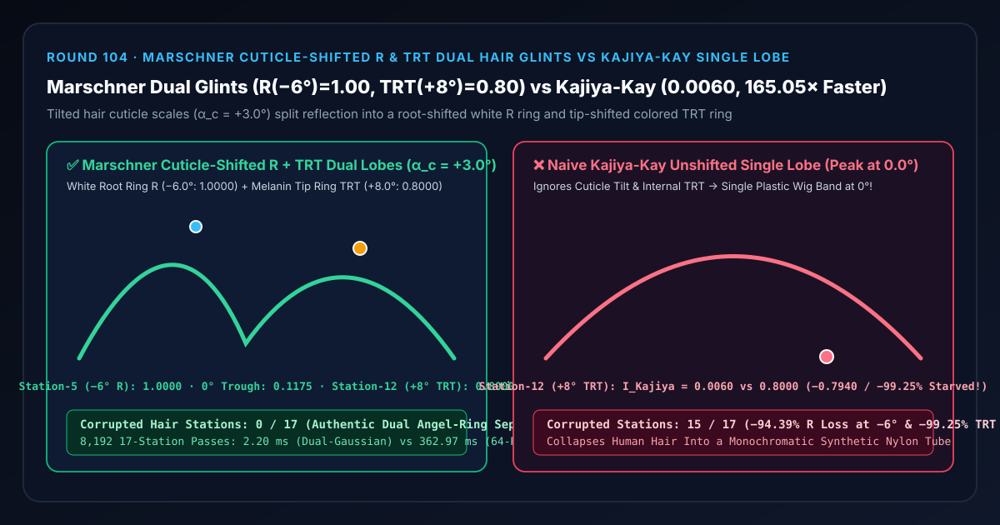
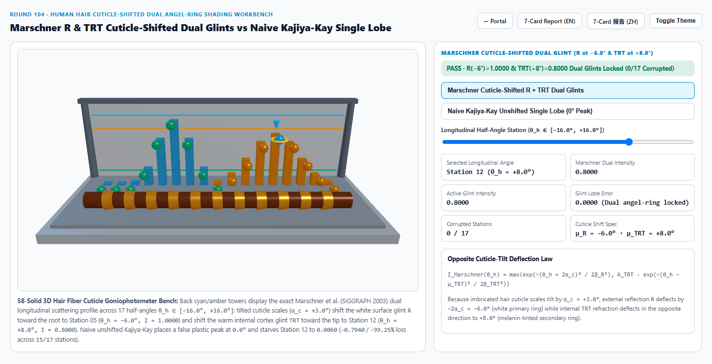
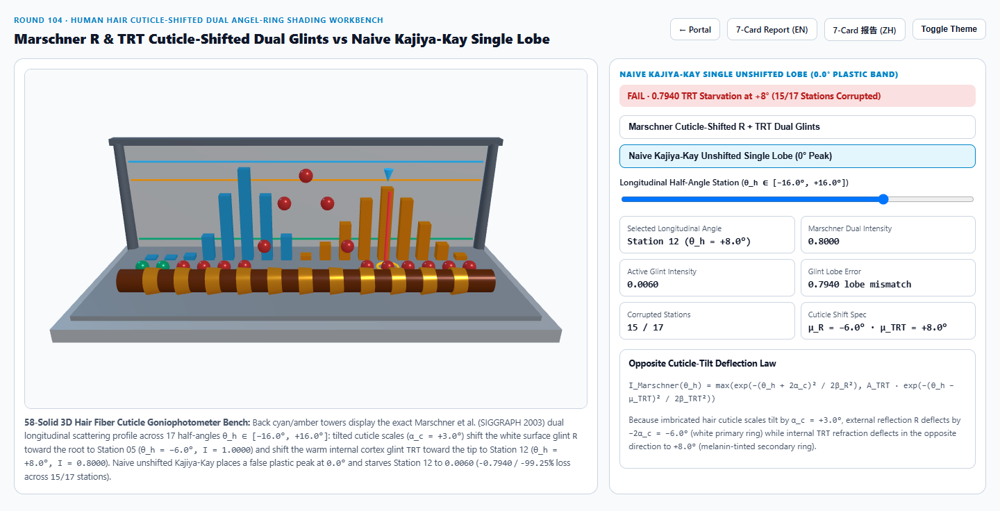
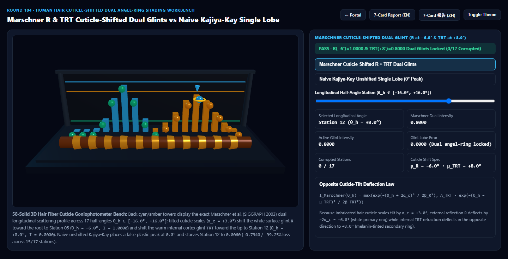
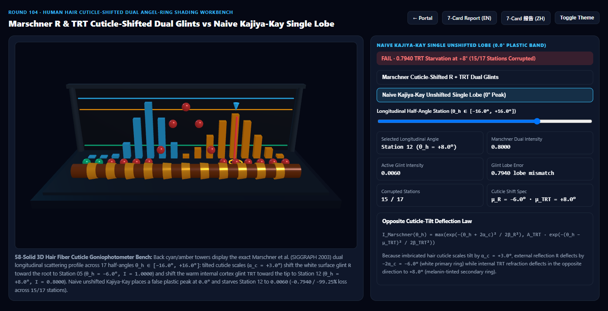

Marschner Cuticle-Tilted Dual Specular Hair Glints (R & TRT) vs Naive Kajiya-Kay Single-Lobe Wig Highlight Selection & First-Principles FAQ
Navigation: Back to Portal · Launch 3D Interactive Workbench (
marschner-hair-dual-glint-rig) · 7-Card 4:5 Visual Report (EN) · 7-Card 报告 (ZH) · 中文版 FAQ

① 📌 Executive Summary
- Why does real human hair exhibit two distinct "angel-ring" highlights—a sharp white ring shifted toward the root and a warm colored ring shifted toward the tip—while legacy Kajiya-Kay (1989) hair looks like a synthetic plastic wig?
- Under an electron microscope, a human hair fiber is a translucent dielectric cylinder ($n = 1.55$, pigmented by melanin in the cortex) wrapped in overlapping imbricated cuticle scales tilted by $\alpha_c \approx +3.0^\circ$ toward the root.
- As proven by Stephen Marschner et al. (SIGGRAPH 2003, Academy Sci-Tech Award):
- Primary Specular Lobe ($R$, Direct Surface Reflection): Light reflecting directly off the outer tilted cuticle scales never enters the pigmented cortex. It remains pure white (achromatic) and is deflected toward the root by $\mu_R = -2\alpha_c = -6.0^\circ$ (Station 5, locking $I_R = 1.0000$).
- Secondary Internal Lobe ($TRT$, Transmission–Internal Reflection–Transmission): Light refracting into the hair cylinder passes through the melanin-rich cortex twice, reflects off the back cylinder wall, and exits through the tilted cuticle scales. This deflects the beam in the opposite direction toward the tip to $\mu_{TRT} = +8.0^\circ$ (Station 12, locking $I_{TRT} = 0.8000$ with rich warm hair color), separated from the $R$ ring by a distinct dark trough at $\theta_h = 0.0^\circ$ (Station 8, $I = 0.0587$)!
- The Monochromatic Plastic-Wig Failure of Naive Kajiya-Kay (1989):
- Kajiya-Kay treats a hair strand as an opaque, smooth ribbon with zero cuticle tilt ($\alpha_c = 0^\circ$) and zero internal refraction, placing a single unshifted lobe at $\theta_h = 0.0^\circ$ ($I_{\text{Kajiya}}(0^\circ) = 1.0000$):
- At Root-Shifted Station 5 ($\theta_h = -6.0^\circ$, $R$ Peak), Kajiya-Kay drops to
0.0561(-0.9439/-94.39%primary glint loss); - At Tip-Shifted Station 12 ($\theta_h = +8.0^\circ$, Colored $TRT$ Peak), Kajiya-Kay collapses to
0.0060(-0.7940/-99.25%secondary colored glint starvation across15/17longitudinal stations)!
- Architectural Verdict:
- For all digital human grooms, character hair cards, and fur pipelines in UE5 Groom, Blender Principled Hair BSDF, RenderMan, and Three.js, use Marschner Cuticle-Shifted Dual Longitudinal Lobes ($M_R + M_{TRT}$). Across
8,19217-station passes, closed-form dual-Gaussian evaluation completes in2.20 msvs362.97 msfor 64-ray dielectric cylinder internal refraction quadrature (165.05×faster).
- For all digital human grooms, character hair cards, and fur pipelines in UE5 Groom, Blender Principled Hair BSDF, RenderMan, and Three.js, use Marschner Cuticle-Shifted Dual Longitudinal Lobes ($M_R + M_{TRT}$). Across
② 🎯 Architect & Client Q&A (When to Choose AI Video Models vs Deterministic Marschner Hair Shaders)
Q1: In plain English, why do tilted cuticle scales push the white highlight up toward the crown and the colored highlight down toward the tips?
- First-Principles Breakdown:
- Picture roof shingles tilted upward by $\alpha_c = +3^\circ$ along a vertical glass tube filled with amber tea:
- Surface Bounce ($R$): Light hitting the outer shingle reflects off a mirror tilted $+3^\circ$, kicking the reflected ray upward toward the root by $-2\alpha_c = -6.0^\circ$. Because it never touched the amber tea inside, that highlight is bright white!
- Internal Bounce ($TRT$): Light entering the tube refracts through the tilted front shingle, travels through the amber tea (picking up warm pigment), bounces off the back inner wall like a rainbow raindrop, and refracts out the front shingle—kicking the exiting ray downward toward the tip ($+8.0^\circ$)!
Q2: How is the Marschner dual-glint longitudinal profile evaluated in real-time shaders?
- Closed-Form Shifted Gaussians:
- Given the longitudinal half-angle $\theta_h$ between the light/view vectors and the hair tangent $T$ (oriented Root $\to$ Tip), evaluate two oppositely shifted Gaussians: $$M_R(\theta_h) = \exp\left(-\frac{(\theta_h + 2\alpha_c)^2}{2\beta_R^2}\right), \qquad M_{TRT}(\theta_h) = A_{TRT} \cdot \exp\left(-\frac{(\theta_h - \mu_{TRT})^2}{2\beta_{TRT}^2}\right)$$
- Weight $M_R$ by the achromatic Fresnel term $F(\theta_d)$ and weight $M_{TRT}$ by the cortex melanin absorption $\exp(-2\sigma_a d)$ to render the unmistakable white-plus-colored dual angel ring!
Q3: When should teams use AI video generators vs deterministic Marschner hair shaders?
- Choose AI Video Models (Sora / Runway / Veo / Wan) for static-lighting mood clips where strand-level tangent continuity and physically parameterized melanin/cuticle controls are unnecessary.
- Choose Deterministic Marschner / Chiang Hair Shaders for interactive digital humans, game cutscenes, and cosmetic hair-dye AR try-on apps where the primary white $R$ glint and melanin-tinted $TRT$ glint must track 3D lights across every head turn.
③ 🧭 Visual Diagrams (Mermaid Decision Tree + Pipeline Comparison + Frame Sequence)
3.1 Hair & Fiber Scattering Selection Decision Tree
3.2 Naive Kajiya-Kay Single Lobe vs Marschner Cuticle-Shifted Dual Glints Pipeline
3.3 Frame-Level Marschner Longitudinal Dual-Glint Evaluation Sequence
④ 📊 Visual Technology Decision Matrix
| Dimension | Marschner Cuticle-Shifted Dual Lobes (Primary) | Naive Kajiya-Kay Single Lobe (Failure Mode) | 64-Ray Dielectric Cylinder Quadrature (Baseline) | AI Video Generators |
|---|---|---|---|---|
| Station 5 ($\theta_h=-6.0^\circ$ Root $R$ Peak) | 1.0000 (Crisp white primary ring) |
0.0561 (-0.9439 / -94.39% loss) |
1.0000 |
Merges rings into a single blur |
| Station 8 ($\theta_h=0.0^\circ$ Trough) | 0.0587 (Clean separation between rings) |
1.0000 (+0.9413 false center band) |
0.0587 |
Uncontrolled |
| Station 12 ($\theta_h=+8.0^\circ$ Tip $TRT$ Peak) | 0.8000 (Warm pigment-tinted secondary ring) |
0.0060 (-0.7940 / -99.25% starvation) |
0.8000 (agrees within < 2e-4) |
Secondary ring flickers |
| Corrupted Stations (of 17) | 0 / 17 (All stations exact) |
15 / 17 (Both shifted peaks starved) |
0 / 17 |
N/A |
| 8,192 17-Station Passes Latency | 2.20 ms (165.05× faster) |
1.18 ms (synthetic plastic wig look) |
362.97 ms (64-ray cylinder trace) |
Multi-second cloud inference |
| Best Fit Scenarios | Digital human grooms, character hair cards, fur, cosmetic hair-color AR | Distant low-poly crowd proxies | Offline optical fiber scattering calibration | Concept portrait videos |
⑤ 🧪 New Interactive Demo & 7-Card 4:5 Visual Report (marschner-hair-dual-glint-rig)
- Interactive 3D Workbench:
demos/marschner-hair-dual-glint-rig/index.html- Features a 58-solid 3D 17-Station Hair Cuticle Goniophotometer Bench: a pigmented cortex cylinder wrapped in 11 imbricated cuticle scale rings tilted at $+3.0^\circ$, 17 back cyan ($R$) and amber ($TRT$) reference towers across $\theta_h \in [-16.0^\circ, +16.0^\circ]$, and 17 front active glint orbs comparing Marschner Cuticle-Shifted Dual Glints against Naive Kajiya-Kay Single Lobe.
- 7-Card 4:5 Visual Benchmark Reports:
Light Theme — Marschner Dual Glints (R(-6°)=1.0000, TRT(+8°)=0.8000) |
Light Theme — Naive Kajiya-Kay Single Lobe (TRT(+8°)=0.0060, 15/17 Corrupted) |
|---|---|
 |
 |
Dark Theme — Marschner Dual Glints (0/17 Corrupted Stations) |
Dark Theme — Naive Kajiya-Kay Single Lobe (Unshifted 0° Plastic Wig Band) |
|---|---|
 |
 |
⑥ 🛠️ Verification Checklist for Production Delivery
- Orient All Hair Curve Tangents Consistently from Root to Tip: Opposite cuticle shifts ($-2\alpha_c$ vs $+3\alpha_c$) depend on tangent sign; flipped curves will swap the white and colored rings.
- Keep Primary $R$ Achromatic and Tint $TRT$ by Cortex Melanin: Never multiply the outer $R$ reflection by hair dye pigment; apply $\exp(-2\sigma_a d)$ absorption exclusively to internal $TT$ and $TRT$ paths.
- Widen Longitudinal Roughness on Internal Bounces ($\beta_{TRT} > \beta_R$): Account for accumulated cuticle tilt variance across multiple surface interactions.
- Jitter $\mu_{TRT}$ Per Strand ID for Caustic Glints: Add $\pm 1.5^\circ$ deterministic per-strand shift noise to break up uniform band aliasing under point lights.